تقرير التحليل الاستراتيجي والـ UI/UX
دراسة ومقارنة لأقوى منصات الذكاء الاصطناعي عشان نعرف نطبق معمارية الـ Agentic في LRNOVA
01 التقرير ده بيشرح إيه بالظبط؟
التقرير ده عبارة عن دراسة تفصيلية وتفكيك (Teardown) لـ 8 من أقوى المنصات العالمية اللي شغالة بالذكاء الاصطناعي في مجالات توليد الفيديو، البرمجة، التصميم، والتعليم.
باختصار التقرير بيشرح: إزاي المنصات دي اتنقلت من إنها تكون مجرد "أداة عادية" (اليوزر بيديها أمر وتعملهوله) لإنها بقت منصات Agentic (يعني نظام ذكي بيخطط وينفذ الشغل في الخلفية لوحده). التقرير بيحط إيدينا على أحسن الطرق في تصميم الـ UI/UX وإزاي نطبق الميكانيزم ده في LRNOVA عشان نطلع بمنتج قوي ينافس عالمياً.
02 الهدف الأساسي (Main Objective)
الهدف الأساسي من التقرير ده هو نقل منصة LRNOVA نقلة نوعية للـ Agentic Shift.
- هنبعد عن النظام القديم (Transactional): اللي هو اليوزر يكتب أمر ويقعد باصص لشاشة التحميل (Loading Screen) لحد ما تخلص، وده بيجيب ملل وبيخلي الناس تقفل وتمشي.
- هنتبنى نظام الـ Agentic: النظام هيبقى قادر إنه يخطط، ينفذ عمليات معقدة في الخلفية (Background Execution)، ويخلي اليوزر يقدر يعدل ويتفاعل في نفس اللحظة من غير ما الشاشة تقفل عليه (مبدأ Fire and Forget).
- تصميم واجهة مستخدم (UI/UX) تدمج بين السهولة العالية والشكل الفخم جداً (Premium) عشان نعلي نسب التحويل (Conversion) ونخلي اليوزر مبهور من أول نظرة.
03 الطريقة والمنهجية (Methodology)
احنا بصينا على الويبسايتات دي وقيمناها بناءً على 4 حاجات أساسية:
1. استخراج المزايا (Feature Extraction)
طلعنا وفصصنا كل ميزة موجودة عندهم؛ زي طرق الإدخال، زراير التفاعل، والتقسيمات الخاصة بالـ UI.
2. الهندسة العكسية (Reverse Engineering)
فهمنا إزاي الـ AI بتاعهم بيشتغل في الخلفية، وإزاي فاصلين مستويات الخدمة (مثلاً Flash للسرعة و Pro للجودة)، وإزاي بيعرضوا النتيجة لليوزر من غير ما الشاشة تتجمد.
3. مسار وتجربة المستخدم (User Sequence & Flows)
مشينا ورا رحلة اليوزر من أول صفحة الهبوط لحد ما يسجل، وإزاي بيخلوه يجرب الأداة فوراً، وإزاي بيعدل شغله جوه مساحة العمل.
4. الـ UI/UX والألوان (UI/UX & Coloring)
حللنا الهوية البصرية، استخدامهم للألوان، الأنيميشن الخفيف المريح للعين، وإزاي بيعملوا تأثيرات البلور (Blur) في شاشات التحميل عشان يدوا إحساس بالفخامة.
نبذة سريعة عن الويبسايتات اللي بصينا عليها:
- HeyGen & Synthesia: منصات جبارة لعمل فيديوهات بأفاتار ذكاء اصطناعي واقعي جداً.
- Replit: بيئة برمجة سحابية بتخلي تيم كامل يشتغل مع Agent بيكتبلهم الكود.
- Perplexity: محرك بحث ذكي بيجاوب بالمصادر وتقدر تتكلم معاه.
- Stitch (with Google): مساعد تصميم بيحول النص لتصميمات واجهات موبايل وويب.
- Relume: أداة سحرية بتولد خريطة المواقع وهياكل الصفحات (Wireframes) في ثواني.
- Taskade: مساحة عمل للإنتاجية بتخليك تشغل كذا AI Agent مع بعض في نفس الوقت.
- MagicSchool AI: منصة بتساعد المدرسين يحضروا دروسهم واختباراتهم بشكل تفاعلي.
- Mindsmith: أداة بتعمل كورسات بالذكاء الاصطناعي مع إمكانية إنك تسحب وترتب الدروس براحتك (Drag & Drop).
04 تفاصيل المنصات (Product Teardown) من الـ Markdown
1. HeyGen
عجبنى شكل الارشادات
- واجهة المنصة بتتميز بتصميم منظم جداً مع إرشادات بصرية واضحة، وده بيسهل على اليوزر يتنقل في مساحة العمل ويوصل للأدوات بسرعة.
- تصميم الـ UI بيعتمد على تنسيق منطقي ومريح للعين، فبيدي توجيه سلس وفعال لليوزر وبيقلل التشتيت على قد ما يقدر.
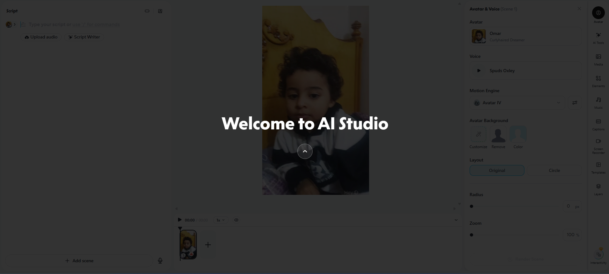
- مساحة العمل بتقدم نظام توجيه بصري واضح وترتيب أدوات بديهي عشان يسهل تجربة المستخدم.
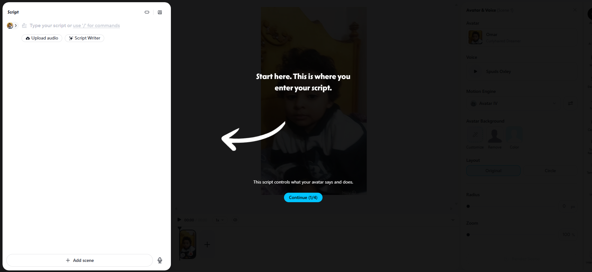
زيارة app.heygen.com
المنصة بتوفر إعدادات مرنة لخلفية الأفاتار، بتخلي اليوزر يقدر يخصصها، يشيلها، أو يغير لون الخلفية بسهولة، وبتقدم خيارات تنسيق زي 'Original' و 'Circle' عشان تحدد المكان بالظبط.
إزاي الميزة دي هتفيد lrnova 🤔
- الـ Branding والتخصيص: بتخلي اليوزر يخلي شكل الأفاتار متماشي مع هوية البراند بتاعته أو ستايل مشاريع الفيديو اللي بيعملها.
- تحسين تجربة المستخدم والمرونة: فصل خصائص الخلفية عن شكل الإطار بيدي لليوزر تحكم دقيق في الشكل من غير ما يعقد عملية الإنشاء.
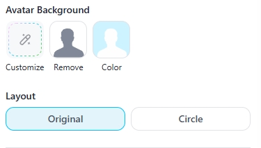
زيارة app.heygen.com
write script (Agentic):
ضاف ال agentic بجانب الويبسايت الاصلى -
تم دمج لوحة 'Script Writer' (Agentic) جنب واجهة مساحة العمل الأصلية، وده بيخلي اليوزر يكتب مواضيع، أفكار، أو تعليمات معينة عشان يولد سكريبتات بالذكاء الاصطناعي فوراً.
إزاي الميزة دي هتفيد lrnova 🤔
- زيادة سرعة الإنتاج: اليوزر مش محتاج يسيب شاشة تعديل الفيديو أو يستخدم برامج كتابة خارجية؛ يقدر يبني المحتوى والسكريبت في مكان واحد، وده بيقلل الاحتكاك جداً في عملية الإنتاج.
- المساعدة بفهم السياق: أسلوب الـ Agentic بيسمح للذكاء الاصطناعي إنه يبص على سياق المشهد الحالي والميديا الموجودة عشان يولد اقتراحات سكريبت مناسبة ومتفصلة بالظبط، وده بيخلي lrnova شريك ذكي جداً في الإنشاء.
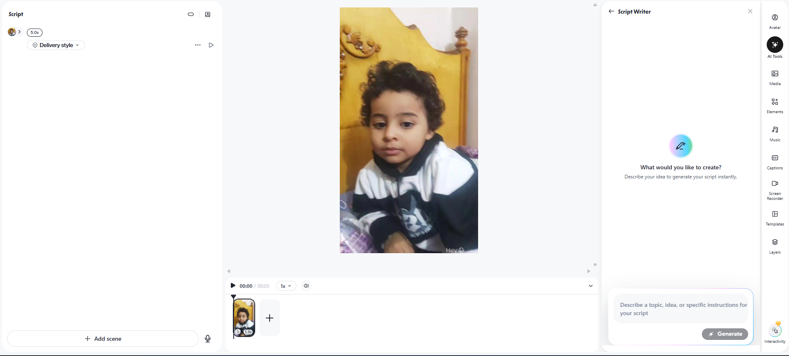
اختيار ال template و كتابه ال agentic sccript
زيارة app.heygen.comواجهة الـ 'Motion Designer' فيها مكتبة مميزة من قوالب المجتمع، بتخلي اليوزر يختار تصميمات احترافية ويربطها مع توليد سكريبت بالـ Agentic عشان يطلع محتوى آلي ومتزامن.
إزاي الميزة دي هتفيد lrnova 🤔
- إنتاج قابل للتوسع: ده بيسمح لليوزر يحافظ على مستوى عالي في التصميم من غير ما يحتاج مهارات تصميم احترافية، وده بيخلي lrnova مناسبة لشريحة أكبر بكتير من صناع المحتوى.
- المزامنة الآلية: الـ AI الـ Agentic بيقدر يحلل قالب الحركة اللي اليوزر اختاره ويكتب سكريبت متطابق تماماً مع التوقيت والستايل، عشان يضمن نتيجة نهائية سلسة وتأثيرها قوي.
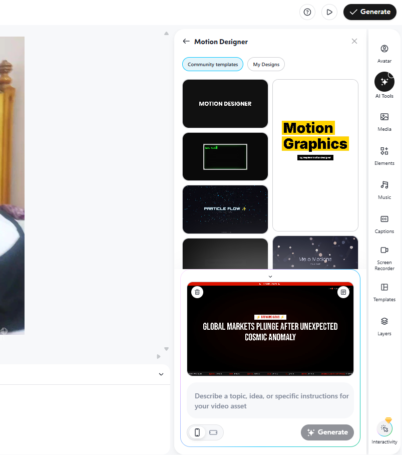
زيارة app.heygen.com
شكل ال loading كويس جدا
الواجهة فيها نافذة بسيطة ومينيمال (Minimalist) لحالة "Generating" بتدي فيدباك في وقتها مع معاينة (Preview) ديناميكية معمولها بلور، وده بيضمن تجربة مستخدم احترافية وتفاعلية أثناء معالجة الـ AI.
إزاي الميزة دي هتفيد lrnova 🤔
- الحفاظ على اليوزر والفيدباك: لما بنعرض مؤشر حالة واضح ومعاينة ديناميكية، احتمالية إن اليوزر يقفل في وقت الانتظار بتقل جداً، لأنه بيشوف تأكيد بصري فوري إن المحتوى بتاعه بيتم إنتاجه بالفعل.
- إحساس الأداء: واجهة التحميل العالية الجودة بتخلي المنصة تبان أسرع وأكثر تطوراً، وبتحول وقت الانتظار التقني لجزء من تجربة ذكاء اصطناعي فخمة (Premium).

زيارة app.heygen.com
- الواجهة بتطبق مبدأ معماري اسمه 'fire and forget'، وده بيسمح لليوزر إنه يبدأ مهام توليد فيديو معقدة أو يبني أجزاء كورس، وينقل فوراً عشان يشتغل في تصميمات تانية من غير ما يستنى عملية الرندرة في الخلفية تخلص.
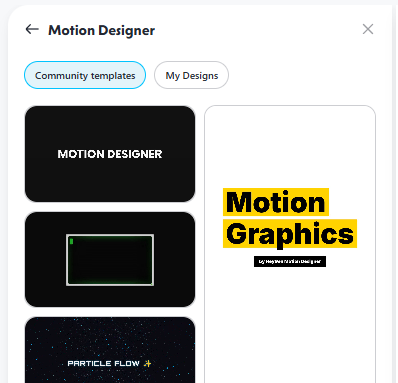
زيارة app.heygen.com
فكره ال Image Generator وانها تكون لوحدها بدل ما تكون ف فيديو من صور
- المنصة بتفصل أداة 'AI Image Generator' كأداة قائمة بذاتها بعيد عن واجهات تعديل الفيديو والكورسات الأساسية، وبتدي مساحة عمل مستقلة اليوزر يقدر يولد فيها صور من النص مباشرة من غير ما يكون متقيد بصيغة الفيديوهات أو التعليم.
إزاي الميزة دي هتفيد lrnova 🤔
فصل أداة توليد الصور بالذكاء الاصطناعي كميزة مستقلة هيدي أفضلية كبيرة جداً لـ lrnova:
- جاذبية أكبر في السوق ومرونة: ده بيمنع إن lrnova تتحط في خانة إنها مجرد أداة للكورسات أو التعليم بس. إننا ندي لصناع المحتوى مكان مستقل لتوليد صور خام، أو بانرات تسويق، أو رسومات، ده بيوسع قاعدة اليوزرز المستهدفين عشان تشمل مصممين الجرافيك والمسوقين.
- مسار تحضير الأصول (Pre-production): صناع المحتوى يقدروا يستخدموا الأداة دي عشان يعصفوا أفكارهم، يعملوا لوحات إلهام، أو يصمموا عناصر بصرية معينة قبل ما يبدأوا حتى في ترتيب الفيديو. ده بيحول lrnova لمحطة متكاملة للأصول اليوزر بيعمل فيها الصور والفيديوهات في نفس الوقت.
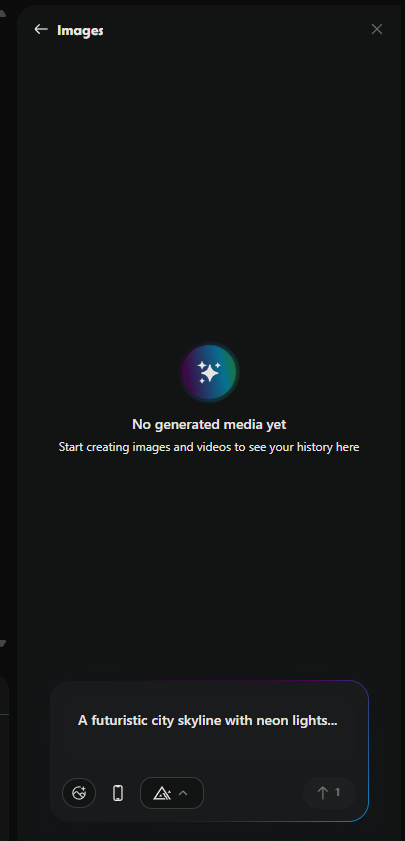
زيارة app.heygen.com
- جزء توليد الفيديو مش مقفول بس على حاجات الفصول والكورسات. إنت تقدر تقريباً تطلع أي نوع محتوى إنت عاوزه، من الإعلانات العالية الجودة لحد الفيديوهات السينمائية، من غير أي قواعد صارمة.
إزاي الميزة دي هتفيد lrnova 🤔
إننا نفتح توليد الفيديو بره حدود المحتوى التعليمي التقليدي دي خطوة استراتيجية ضخمة لـ lrnova:
- توسيع ضخم للجمهور: لما نفصل محرك الفيديو عن هياكل التعليم الصارمة، lrnova بتفتح بيبانها فوراً للمسوقين الرقميين، وصناع المحتوى، وصناع الأفلام، وأصحاب البزنس اللي عايزين بس يطلعوا فيديوهات جودة عالية من غير ما يتجبروا على قالب "الكورس".
- تنوع في الميزات: ده بيحط lrnova كاستوديو إبداعي بالذكاء الاصطناعي مرن ومتعدد الاستخدامات. اليوزر يقدر يبني كورسات لو عاوز، بس يقدر كمان يعمل تيزرات التسويق، وفيديوهات السوشيال ميديا، وفيديوهات الـ Landing Pages كلها جوه نفس النظام.

زيارة app.heygen.com
lrnova logo and when hover and press on logo view a card navigate a user to pro plan
- الواجهة بتدمج آلية Upselling بديهية، بحيث لو وقفت بالماوس أو ضغطت على لوجو البراند أو أي ميزة مدفوعة، بيظهرلك فوراً كارت ترقية، وده بيوجه اليوزر بسلاسة عشان يعمل ترقية للـ Pro Plan.
إزاي الميزة دي هتفيد lrnova 🤔
تطبيق فكرة الـ upsell المباشر عن طريق اللوجو أو جوه الميزات نفسها هيفيد lrnova من خلال:
- رفع نسب التحويل (Monetization): بدل ما نخبي خطط الاشتراك جوه الإعدادات، عرض مزايا الباقة المدفوعة في نفس اللحظة اللي اليوزر بيتفاعل فيها مع ميزة معينة بيقصر رحلة اليوزر من باقة مجانية لعميل دافع.

اضافه قويه جدا فكره انى اعرض لليوزر ال generated from another users سواء صور فيديو محتوى تعليمى اى حاجه اقوله الناس عملت ايه من lrnova
- مكتبة الميديا فيها Community Discovery Feed بيعرض الأصول العامة اللي اتولدت من مستخدمين تانيين — سواء صور، فيديوهات، أو محتوى تعليمي — وده بيدي مصدر فوري للإلهام الإبداعي وأصول قابلة لإعادة الاستخدام جوه بيئة العمل نفسها.
إزاي الميزة دي هتفيد lrnova 🤔
دمج فيد لمجتمع (Community) جوه الـ sidebar بتاع الأصول هيفيد lrnova من خلال:
- حل مشكلة البداية من الصفر (Cold-Start): لما يوزر جديد يدخل lrnova، مش هيتصدم بشاشة فاضية تخوفه. لما يشوف ميديا عالية الجودة وطالعة تريند معمولة بناس تانية، ده بيلهمه فوراً وبيوريله قوة المنصة في الرندرة بجد.
- تعزيز نظام تعاوني: بيحول lrnova من أداة تعديل معزولة لنظام مبني على المجتمع. صناع المحتوى يقدروا ياخدوا مباشرة من الأصول البصرية المشتركة دي، وده بيزود التفاعل جداً مع المنصة.
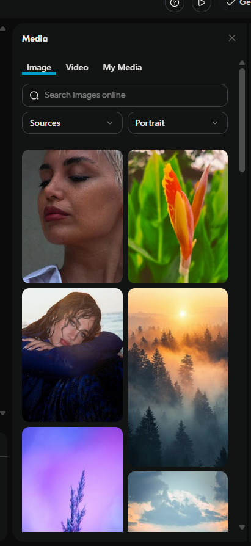

زيارة app.heygen.com
يعنى غير انهم مخليين ال agentic جزء من مرحله ال process مخلينه ف كومبووننت لوحده
- النظام بيقدم معمارية ذكاء اصطناعي قابلة للتكيف جداً عن طريق إنه بيوفر طبقتين مختلفتين للعرض للـ Agentic: جزء مخصص ومنفصل اسمه 'Video Agent' بيفتح شاشة كاملة للتركيز، ولوحة جانبية 'Sidebar' عشان تقدر تولد محتوى وإنت جوه الكانفاس.
- النظام الـ Agentic الأساسي بيشتغل كـ طبقة عرض محسّنة للـ layout، وده بيسمح للمنصة إنها تعلي مستويات الـ UI/UX بتاعتها بسلاسة وتضيف مسارات الـ Agentic بالتدريج من غير ما تبوظ تجربة المستخدم الأساسية.
إزاي الميزة دي هتفيد lrnova 🤔
معمارية الـ Agentic المزدوجة دي بتدي قيمة استراتيجية ضخمة لـ lrnova:
- مرونة ملهاش مثيل في الشغل: لما بنوفر الشاشة الكاملة للـ Agent والـ Sidebar الخفيف، lrnova بتتكيف تماماً مع عقليات اليوزرز المختلفة. صانع المحتوى يقدر يستخدم الـ Sidebar للتعديلات السريعة، أو الداشبورد المخصص عشان يدير مسارات كورسات كاملة.
- مخاطرة هندسية قليلة وتحديثات سلسة: التعامل مع نظام الـ Agentic كطبقة عرض متخصصة معناه إن lrnova هتقدر تبتكر باستمرار وتضيف ميزات جديدة في الواجهة من غير ما نهد ونبني الـ Backend من الصفر.
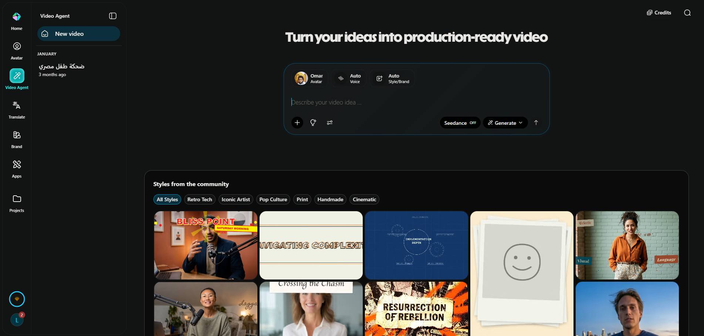
دى نفس الاستايل
- التقرير فيه مقارنة مباشرة بتحط واقعية رندرة lrnova وإخراجها السينمائي قصاد البدايل القديمة في السوق. عن طريق إننا نعرض مقارنة بصرية جنب لجنب بين 'واقعي أكتر' وبين 'شكله مزيف'، المنصة بتثبت ميزتها التنافسية.
المقارنة اللي جنب لجنب دي عبقرية. هي بتحط lrnova مباشرة قصاد المنافسين من خلال رسم خط واضح بين الأفاتار الواقعي جداً والحقيقي، وبين فيديوهات الذكاء الاصطناعي البلاستيك والمزيفة اللي موجودة في منصات تانية.
إزاي الميزة دي هتفيد lrnova 🤔
دمج مقارنة مباشرة مع المنافسين في الـ Presentation أو الـ Landing Page بتاعة lrnova بيدي مميزات حاسمة:
- إظهار فرق الجودة بشكل قاطع: بدل ما ندّعي بس إن lrnova عندها تكنولوجيا أحسن، التباين البصري المباشر بيوصل تفوق المنتج للعملاء المحتملين في ثانية. ده بيخليها الاختيار البديهي للشركات اللي عاوزة محتوى احترافي.
www.heygen.com
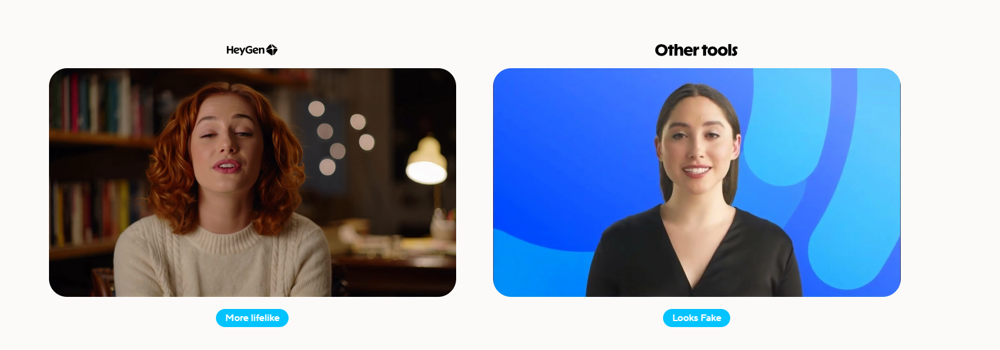
فكرة دبلجة الفيديو
زيارة app.heygen.comبياخد الصوت -- بيحوله لتيكست -- بيحول التيكست ل تيكست مدبلج -- بيحول التيكست المدبلج لصوت مع الالتزام بمدة الفيديو -- ومسح الصوت الاصلى ووضع الصوت المدبلج
- داشبورد 'دبلجة الفيديو' المنفصلة فيها نظام ترجمة صوتي متقدم بيسحب مسارات الصوت، بيحول الكلام لتكست، يترجم التكست، وبعدين يصنع صوت محلي متزامن مع مدة الفيديو، ويبدل الصوت الأصلي في الخلفية بالصوت الجديد المدبلج بسلاسة.
إزاي الميزة دي هتفيد lrnova 🤔
دمج نظام دبلجة فيديو آلي متكامل هيدي أفضلية استراتيجية رهيبة لـ lrnova:
- تعريب وتوطين عالمي بدون مجهود: لصناع المحتوى والشركات اللي بيستخدموا lrnova لعمل كورسات، الميزة دي بتشيل حواجز اللغة فوراً. اليوزر يقدر يعمل كورس بلغة واحدة، ويولد نسخ مدبلجة للأسواق التانية بضغطة زرار واحدة.
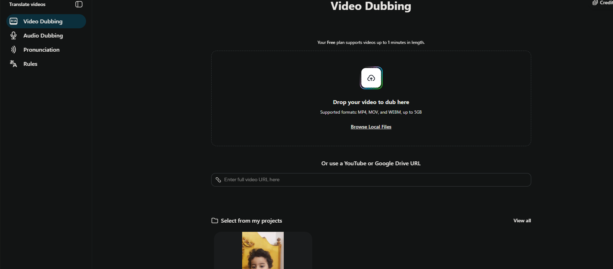
زيارة app.heygen.com
تطبيق فكرة ال MCP ان اربط نظامى بنظام
- النظام بيعرض 'سوق تكامل' (Integrations Marketplace) ضخم، وده بيعمل بيئة مترابطة بتوصل منصة صناعة الفيديو بأدوات أتمتة خارجية، وبرامج إدارة مهام، وشبكات توزيع على قنوات كتير بسلاسة.
إزاي الميزة دي هتفيد lrnova 🤔
تطبيق سوق Integration قوي هيجيب قابلية توسع من الدرجة الأولى لـ lrnova:
- أتمتة مسارات عمل الشركات: صناع المحتوى يقدروا يربطوا lrnova مع منصات زي Zapier و Make. مثلاً، لما المدرب يحدّث نص الدرس في الداتا بيز بتاعته، ده ممكن يشغل lrnova أوتوماتيك عشان ترندر فيديو درس جديد في نفس اللحظة من غير تدخل يدوي.
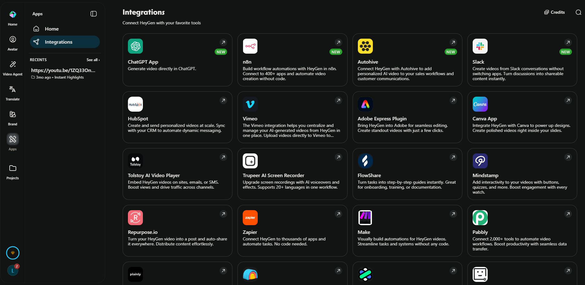
www.heygen.com
دى ممكن تتضاف عندنا ك ملخص
- شكل القائمة المنسدلة الضخمة (Mega-navigation) بيدي عرض واسع ومتقسم جداً لكل المنتجات مباشرة من الهيدر الأساسي، وده بيسهل على اليوزر يكتشف المنتجات الفرعية، أدوات الإبداع، والنماذج بطريقة مرتبة وشيك في شكل أعمدة.
إزاي الميزة دي هتفيد lrnova 🤔
تطبيق شكل القائمة الضخم والشامل ده على موقع lrnova والصفحة الرئيسية بيدي مميزات مهمة للمنتج:
- إظهار القيمة فوراً: بما إن lrnova بتوسع إمكانياتها في صور وفيديو وـ Agentic، القائمة العادية مش هتدّيها حقها. الـ Mega-menu بتدي إشارة بصرية للشركات إن lrnova دي منصة قوية وشاملة ومش مجرد أبلكيشن بميزة واحدة.
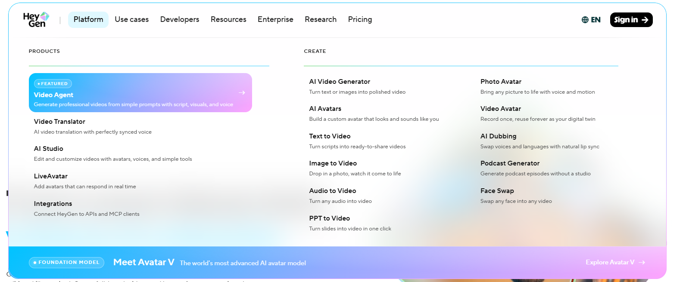
2. Replit
REPLIT same V0 -
زيارة replit.com
,
زيارة v0.app
التبديل ما بين ال agent --> lrnova flash or lrnova pro
الصوره اللى فوق واللى تحت نفس المبدأ
- النظام بيدعم اختيار الـ Model بشكل ديناميكي من جوه مربع المحادثة نفسه، وده بيسمح لليوزر يبدل بين مستويات المعالجة زي 'lrnova flash' و 'lrnova pro' على حسب احتياجه للسرعة والتعقيد.
إزاي الميزة دي هتفيد lrnova 🤔
دمج مبدل الموديلات ده مع فيدباك نضيف أثناء التحميل هيجيب مميزات كبيرة لـ lrnova:
- مرونة في الـ Monetization: لما بتدي اليوزر الحق يختار بين محرك سريع وخفيف ومحرك قوي وذكي، إنت بتديله تحكم كامل في رصيده. ودي كمان بتشتغل كطريقة طبيعية عشان يقنع اليوزر يعمل Upgrade لما يحب يطلع فيديو بستايل أعلى وأقوى.
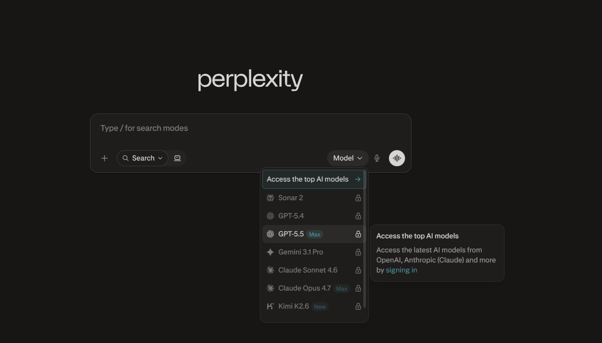
4. Stitch (with Google)
before user sign in
اكتر ويبسايت عاجبنى من ناحيه ال agentic وستايل والوان
- مربع الإدخال بيخليك تبدل موديلات الـ AI وأنت شغال، وده بيسهل جداً التبديل بين محرك سريع جداً 'lrnova flash' وبين محرك قوي 'lrnova pro'.
- الأنيميشن بتاع التحميل شكله نضيف جداً، وبيديك معاينة ضبابية (Blur) ناعمة للمحتوى والـ AI شغال بيرندر كل حاجة في الخلفية.
- تصميم صفحة الهبوط قبل التسجيل خرافي بصراحة، بيستخدم مربع إدخال في النص، مع تدرجات ألوان نيون جامدة، وخلفية شبكية حادة عشان تدي إحساس إنها منصة تكنولوجية فخمة (Premium) من أول نظرة.
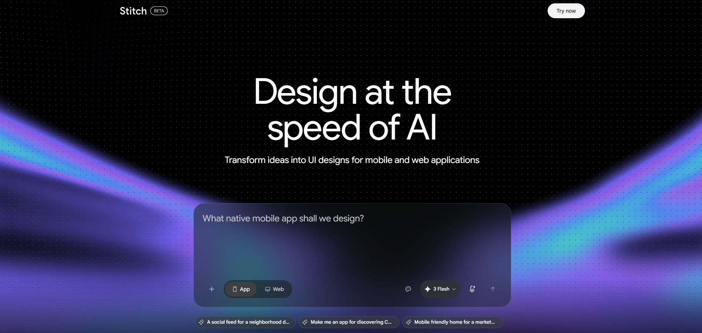
5. Relume
- توليد الـ Sitemaps والـ Wireframes بالذكاء الاصطناعي: بتقدر تكتب وصف بسيط لفكرة موقعك والـ Prompt الخاص بيك، والذكاء الاصطناعي في الموقع بيبني لك خريطة الموقع (Sitemap) وهيكل الصفحات المبدئي (Wireframes) في ثواني.
- تفاعل الماوس الجماعي: واجهة الرئيسية بتطبق تصميم تفاعلي بيبين مؤشرات الماوس بتاعة كذا مستخدم لايف، فبتعرض ماوس للضيوف أو التيم (زي Mario و Jessica) بتتحرك على الشاشة عشان تحاكي بيئة عمل تعاونية وتفاعلية في نفس اللحظة.
- عنصر الـ Shuffle: الواجهة فيها زرار تفاعلي للتبديل (Shuffle) محطوط جوه مساحة العرض مباشرة، بيخلي الزوار يقلبوا فوراً بين أشكال مختلفة للـ wireframes، أو التصميمات، أو ستايلات الألوان بضغطة زرار واحدة.
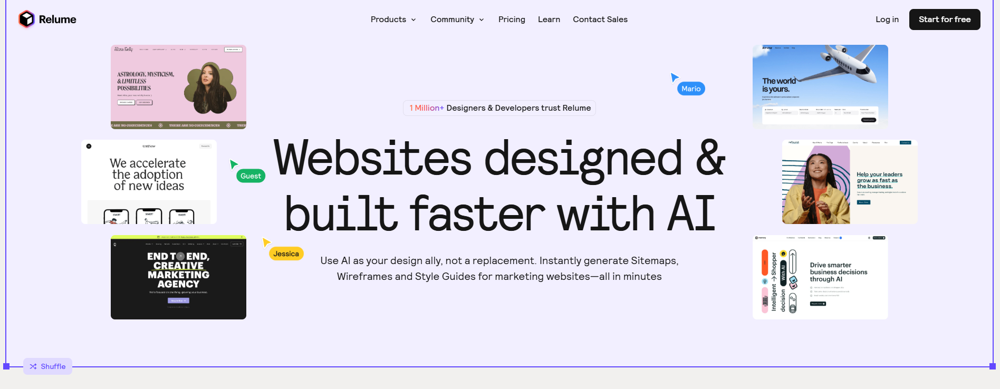
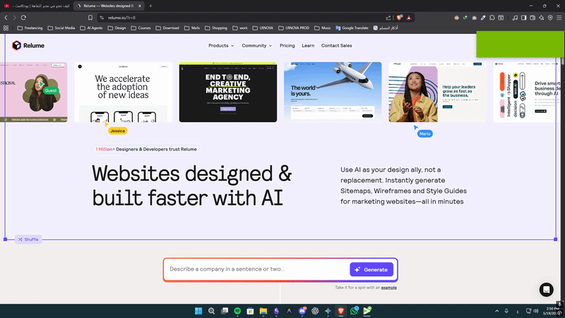
- كانفاس تفاعلي للشرح: الرئيسية بتطبق رسم بياني تفاعلي مركزي بيشتغل بالـ prompts كدليل شرح لليوزر، وبيرسم بصرياً الخطوات بالظبط بتاعة التوليد متقسمة لـ 3 مراحل: تخطيط، هيكلة، وتصور.
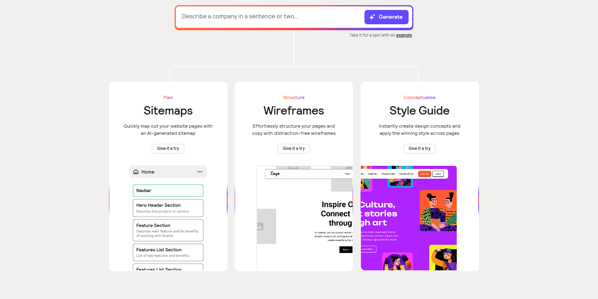
- الواجهة فيها نافذة تحميل بسيطة (Generating) بتدي فيدباك فوري مع معاينة معمولها بلور، وده بيضمن إن اليوزر يفضل متفاعل ومينسحبش أثناء معالجة الأصول.
- أنيميشن التحميل نضيف جداً. بيديك نظرة سريعة ناعمة وضبابية على المحتوى بتاعك بينما الـ AI شغال في المعالجة التقيلة في الخلفية.
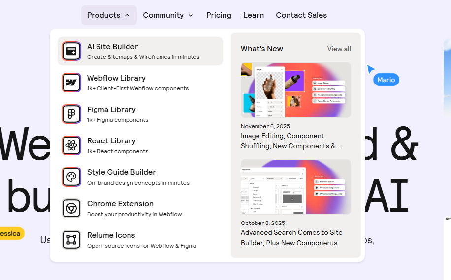
زيارة relume.io
- توليد ستوري بورد مستقل: مساحة العمل مدمج فيها باني ستوري بورد آلي بيحول كلام اليوزر فوراً لمشاهد وهياكل محتوى منظمة، زي الـ sitemaps المتطورة قبل ما ينفذ الشغل الفعلي.
- تحديثات هيكلية في وقتها: الكانفاس شغال بمحرك توليد فوري، بيسمح لصناع المحتوى إنهم يشوفوا تسلسل المشاهد والإطار القصصي والكتل بتتبني ديناميكياً قدامهم على الشاشة بدون أي لاج أو تقطيع في الواجهة.
إزاي الميزة دي هتفيد lrnova 🤔
إضافة كانفاس للستوري بورد الحية في lrnova بيدي قيمة مذهلة للمنتج:
- تخطيط ممتاز قبل الإنتاج: توليد فيديوهات تعليمية كاملة أو إعلانات معقدة بشكل مباشر ممكن يعك الدنيا. لما نحط شاشة تفاعلية للستوري بورد الأول، lrnova بتخلي اليوزرز يرتبوا، ويراجعوا، ويعتمدوا تسلسل مشاهدهم قبل ما يضيعوا أي رصيد في رندرة الفيديو.


WOW DESIGN (IMAGINATION)
زيارة relume.io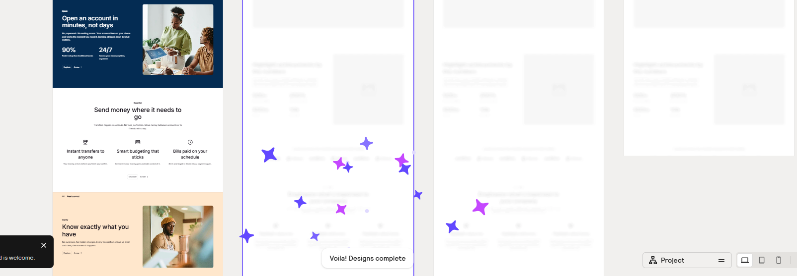
هويه بصريه للويبسايت يكون ليه لوجو بيعبر عن المنصه بأنيميشن محترم
- هوية بصرية متحركة للبراند: المنصة بتتميز بهوية بصرية فخمة متركزة حول لوجو 3D متحرك. لما الصفحة بتحمل أو اليوزر بيتفاعل، اللوجو بيعمل حركة أنيميشن فخمة وسلسة بتوصل فوراً إحساس إن دي تكنولوجيا متطورة ومدعومة بالذكاء الاصطناعي.
- شاشات تحميل بصرية بتشدك: الموقع استبدل أيقونات التحميل الثابتة والمملة بتأثيرات حركية تفاعلية. المايكرو-أنيميشن العالي ده بيخلي اليوزرز متفاعلين ومشدودين أثناء ما الصفحة بتحمل أو مساحة العمل بتتبني.
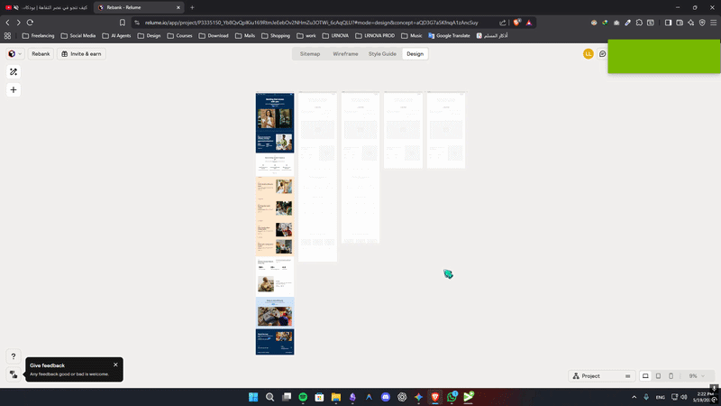
فكره حلوه جدا انهم عاملين subdomain وعاملين community يقدر اى حد ينشر اى حاجه عملها او حتى يسأل وغيره يرد عليه فكره ال community دى تحفه بجد
- بيئة مجتمع مستقلة: المعمارية بتدمج شبكة تواصل مخصصة متطسطبة على Subdomain (زي community.lrnova.ai)، وده بيعمل قاعدة معرفية مركزية ومنتدى بره المحرك الأساسي بتاع المنتج.
- تفاعل تعاوني بين الناس: هيكل المنتدى بيسهل الدعم الفني، ومشاركة الأصول، والتأكيد على جودة المنتج، وبيدي القوة لصناع المحتوى إنهم ينشروا شغلهم اللي عملوه، أو يسألوا عن مشاكل، وياخدوا فيدباك وتعاون مباشر من ناس تانية حوالين العالم.
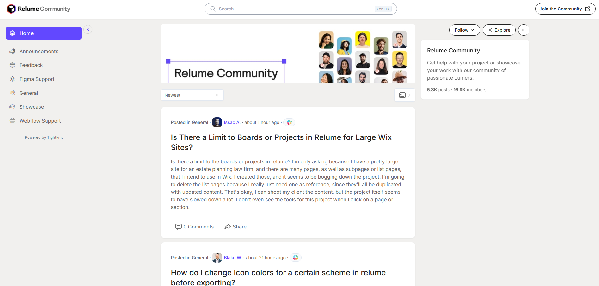
اراء الناس عن lrnova ممكن تتحط على هئية card
- هيكلة عرض الآراء كـ Social Proof: المنصة دمجت حيطة مخصصة لـ 'Community Love' جوه إطار التسويق، وبترتب آراء اليوزرز الحقيقية والمراجعات في شكل كروت شيك جداً (Masonry Grid).
- شكل توثيق متعدد القنوات: الكروت دي بترتب الفيدباك المكتوب جنب الفيديوهات المدمجة بشكل ديناميكي، وبتعرض ثقة الناس من منصات زي إكس (تويتر سابقاً) ويوتيوب عشان توصل أقصى ثقة لليوزر في البراند قبل ما حتى يعمل أكونت.
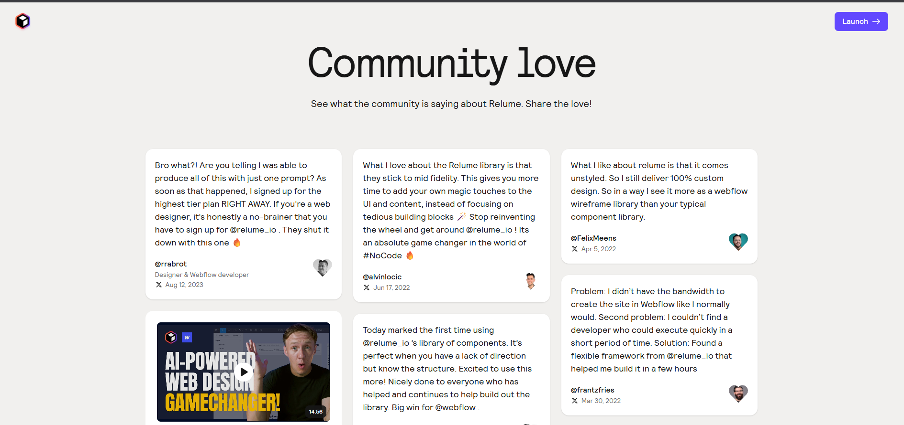
الصفحتين دولا inspiration and showcase ممكن نطلع منها ب حاجتين :
1 - تتحط ف ال landing page for lrnova + lrnvoa.ai
سواء تمبلتس جاهزه اعرضها عليها على اساس انه يقدر يعمل ايه اوو ------ ممكن يستعمل
- معرض للإلهام: المنصة العامة فيها جزء مخصص للـ 'Inspiration & Showcase' موجود على الدومين الأساسي، بيعرض مكتبة ضخمة من قوالب جاهزة وتصميمات وأصول معموله من المجتمع عشان تسهل العصف الذهني.
- تنفيذ مباشر ('Build It'): كل كارت في معرض الإلهام فيه زرار تنفيذ فوري، بيخلي صناع المحتوى يتصفحوا مشروع جاهز أو قالب، ويسحبوه فوراً لبيئة العمل بتاعتهم بضغطة زرار واحدة.
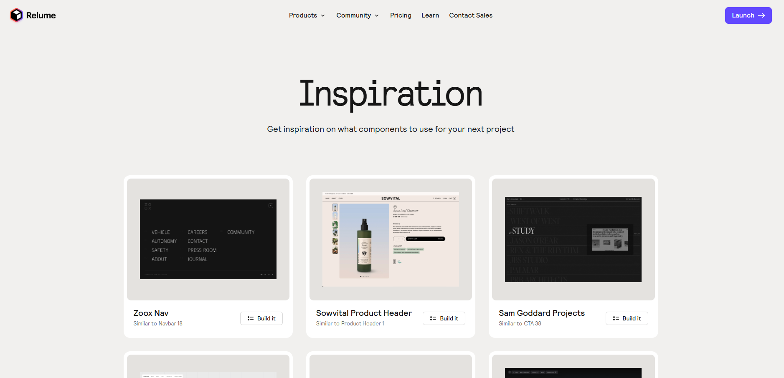
زيارة relume.io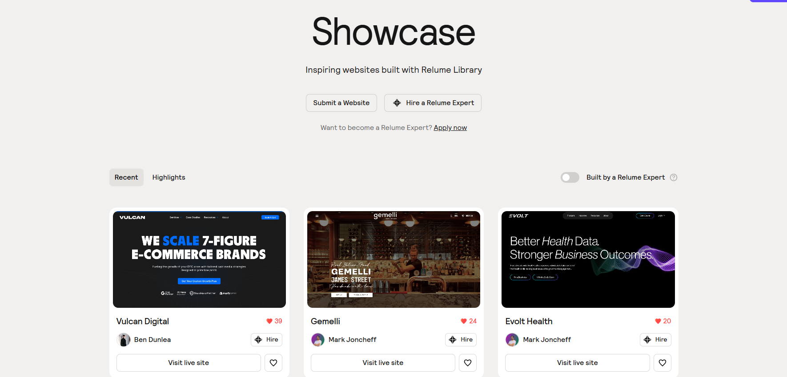
طرح ال price والاهم اظهار فكرة الخصم وبدون خصم
- مزامنة הקوالب مع السكريبت: مساحة العمل بتربط بين مكتبة الموشن جرافيكس مع سكريبتات الـ Agentic، وده بيسمح لليوزر يختار قالب ويولد فوراً سكريبت متزامن مع وقت الفيديو البصري.
- جدول أسعار فيه خصومات ديناميكية: صفحة الاشتراكات فيها طريقة دفع تفاعلية بزرار واضح بيبين الفرق بين الدفع الشهري وبين السنوي اللي عليه خصم صريح (زي 'خصم سنوي 30%') عشان يشجع اليوزر إنه يشترك.

6. Taskade
اللى ممكن ناخده منهم هو فكره ال ريفراال ان لو حد دعا شخص يستخدم الابليكيشن ياخده خصم
- آلية الدعوات لمساحة العمل: المنصة فيها نظام Referral فيروسي مدمج جوه نافذة بسيطة لـ 'Invite to Workspace'، بيخلي اليوزرز يبعتوا لينكات دعوة خاصة أو إيميلات مباشرة من جوه النظام.
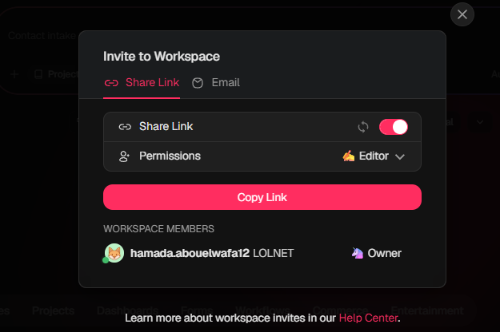
7. MagicSchool AI
- النص بيظهر لايف بسلاسة مذهلة. إنت بتكتب الـ prompt، والسكريبت بيبدأ يتكتب قدام عينك سطر بسطر، يعني مفيش أي انتظار لشاشة التحميل المملة.
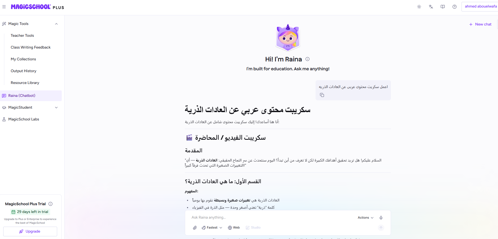
8. Mindsmith
فكره حلوه ان الواحد يقدر يعمل كورس من امر واحد فقط ومن علامات الزائد اقدر اضيف اللى انا عاوزه كدا وفرتله فكره agentic + manually
- تخصيص ميكس بين الـ Agentic واليدوي: نافذة الإنشاء بتربط التوليد الآلي بتحكم بشري دقيق من خلال إدراج توكنات (زراير) يدوية — زي فئة المتعلم (Learner)، وأسلوب الكلام (Tone)، وأسلوب الكتابة، والهيكل (Outline) — وده بيخلي صناع المحتوى يضيفوا قيود معينة أو يرفعوا ملفات كمرجع مباشر لعملية الإدخال بتاعة الـ Agent.
إزاي الميزة دي هتفيد lrnova 🤔
دمج نافذة إنشاء كورس بتعتمد على نظام ميكس وتوكنات بيضيف قيمة ضخمة جداً لـ lrnova:
- التخلص من تعقيد كتابة الـ Prompts: أغلب المعلمين ومدربين الشركات ميعرفوش يكتبوا prompts ذكاء اصطناعي تفصيلية ومثالية. لما نديهم زراير شورت كات واضحة (زي +Learner، +Tone)، lrnova بتخلي إضافة سياق غني للكورس سهلة جداً من غير ما يحتاجوا يكتبوا براجرافات من الأوامر المعقدة.
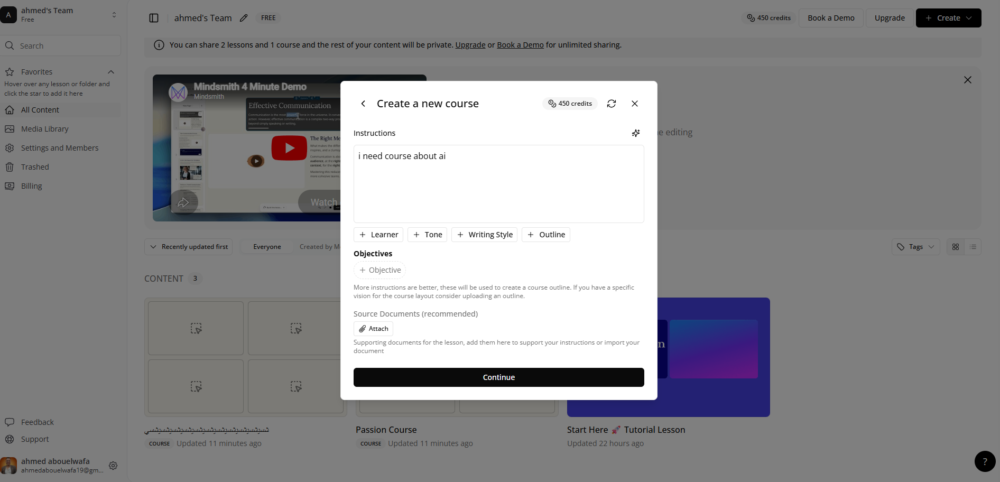
زيارة app.mindsmith.ai
drag and drop part of content
- معمارية كتل السحب والإفلات (Drag-and-Drop): أداة التعديل بتستخدم واجهة كتل بديهية تقدر تسحبها وتسيبها، بتخلي اليوزر يقدر يعيد ترتيب وحدات المنهج بالكامل، أو أقسام النصوص، أو الميديا بمنتهى السهولة عن طريق إنه يمسكها من النقط الستة الصغيرة.
- إعادة ترتيب دقيقة للعناصر: الكانفاس المنظم بيضمن إن إعادة ترتيب هيكل القصص أو مواضيع الدروس بيظبط تسلسل العناصر بشكل أوتوماتيك من غير ما يبوظ الـ layout أو العلاقات بين السكريبتات المتداخلة.
move course to folder or move lesson to to another lesson
زيارة app.mindsmith.ai
05 مقارنة بين المنصات (Comparison Matrix)
| المنصة | التخصص الأساسي | قوة الـ Agentic | مميزات الـ UI/UX |
|---|---|---|---|
| HeyGen | فيديو وأفاتار واقعي | كاتب سكريبت مدمج، مزامنة القوالب مع النص، ومهام في الخلفية. | شاشات تحميل بضبابية (Blur)، ومعاينة لايف، وفصل تام بين الـ Agent والعمل اليدوي. |
| Replit | برمجة وتوليد واجهات | تقسيم العمليات لمهام خلفية، والعمل على التخطيط أولاً (Plan). | تقسيم الشاشة (Split-screen) لعرض الدردشة والتنفيذ في نفس اللحظة. |
| Perplexity | بحث ذكي وتحليل داتا | التبديل التفاعلي بين نماذج سريعة (Flash) ونماذج معقدة (Pro). | واجهة دردشة نظيفة وخالية من التشتيت، مع إبراز واضح للمصادر. |
| Stitch (Google) | UI/UX من النصوص | محرك أداء فائق السرعة، بيحدث الواجهات قدام عينك. | تصميم بريميوم (نيون وشبكة داكنة)، وأنيميشن تحميل فخم جداً. |
| Relume | هياكل المواقع (Sitemaps) | توليد ستوري بورد كامل قبل التنفيذ، ومحاكاة للتفاعل الجماعي. | مؤشرات ماوس تفاعلية حية، مايكرو-أنيميشن، وهوية بصرية مبهرة 3D. |
| Taskade | إنتاجية وإدارة مهام | تشغيل عدة عملاء ذكاء اصطناعي متزامنين جوه نفس المشروع. | ترتيب مرن وتعدد مساحات العمل بسهولة شديدة. |
| MagicSchool AI | محتوى تعليمي تفاعلي | كتابة المحتوى اللحظية سطر بسطر أمام المستخدم. | سرعة رهيبة في إظهار النتائج بدون شاشات تحميل توقف مسار العمل. |
| Mindsmith | توليد كورسات كاملة | بناء كورس متكامل من أمر واحد، وتخصيص بأزرار مساعدة (Tokens). | السحب والإفلات (Drag & Drop) للمنهج وتعديل الكتل بسهولة تامة. |
06 التوصيات الخاصة بمنصتنا (Recommendations)
1. كانفاس المخطط المنقسم (Split Blueprint Canvas)
هنعمل إيه؟ نفصل بيئة العمل لجزئين: جزء للدردشة مع الـ Agent، وجزء بيعرض خطة الفيديو أو الكورس ككتل (Blocks) قابلة للسحب والإفلات.
ليه؟ عشان اليوزر يقدر يراجع الخطة ويرتبها براحته قبل ما يخصم من رصيده في الرندرة. ولو حب يعدل، هيعدل مشهد واحد بس من غير ما يعيد الكورس كله، وده هيوفر رصيد بنسبة كبيرة ويريح العميل.
2. زراير تبديل الموديلز وخيار التخطيط (Flash/Pro & Plan Checkbox)
هنعمل إيه؟ نحط زراير في مربع الأوامر تتبدل بين Flash (سريع ورخيص للتجارب) و Pro (جودة عالية). ونحط بوكس [Plan] يجبر الـ AI يكتب الخطة الأول قبل التنفيذ.
ليه؟ بيدي اليوزر مرونة ويشجعه يعمل ترقية لما يحب يطلع شغل احترافي للعملاء بتوعه، وبيمنع حرق الرصيد على الفاضي.
3. العرض المزدوج للـ Agent ونظام الدبلجة
هنعمل إيه؟ نخلي الـ Agent موجود في شريط جانبي (Sidebar) للتعديلات السريعة، وكشاشة كاملة للمشاريع الكبيرة. ونضيف داشبورد دبلجة آلية بتاخد الفيديو وتطلع منه نسخ بلغات تانية متزامنة مع حركة الشفايف.
ليه؟ الدبلجة دي ميزة تنافسية جبارة هتخلينا منصة عالمية، أي مدرب يقدر يعمل كورس واحد ويترجمه لكل اللغات بضغطة زرار.
4. صفحة الهبوط التفاعلية ومكتبة الإلهام (Action-First Landing)
هنعمل إيه؟ صفحة هبوط بتصميم بريميوم نظيف جداً، تحط اليوزر قدام الـ Prompt box على طول عشان يجرب. ونعمل صفحة "Showcase" تعرض شغل الناس التانية مع زرار "Remix" يخلي أي حد ينسخ التصميم ويبدأ يعدل عليه.
ليه؟ بيشيل حواجز التسجيل ويحول الزائر لعميل فوراً، ومكتبة الإلهام دي بتدي مصداقية قوية جداً (Social Proof) وبتحل مشكلة البداية من الصفر.
5. مجتمع مستقل ونظام إحالة فيروسي (Viral Referrals)
هنعمل إيه؟ نعمل subdomain للمجتمع (community.lrnova.ai)، ونخلي أي يوزر يشارك مشروعه مع حد والحد ده يسجل، الاتنين ياخدوا رصيد. ونعمل حيطة شهادات (Wall of Love) فيها فيديوهات وتويتات حقيقية.
ليه؟ بيعزل ضغط الداتا عن الخوادم الأساسية بتاعتنا، ونظام الإحالة بيخلي النمو بتاعنا يشتغل لوحده (Viral Growth) كأنه ماركتنج ببلاش.